Edge를 Platform과 같은 룩앤필로 정리
2026-11-01 · 브랜치 feat/edge-consistency(feat/platform-consistency 위). push하지 않았다.
요약. Edge 스토리를 Platform과 같은 구조(페이지별 Workspace · System States · Workflows)의 0.0.6으로 정리하고, 워크플로우를 단계마다 1초씩 천천히 재생하게 했다. 이어서 Edge 화면 코드를 Platform 기준으로 5단계에 걸쳐 맞췄다: 옛 토큰 이름, 모서리 깊이 규칙, 공용 컨트롤, 직접 쓴 px, 공용 열 레이아웃(좌우 320px), 직접 꾸민 요소. 단계마다 CI와 같은 순서로 전체 검사를 통과했고, 변경 전후를 번호 박스(AS-IS 주황 / TO-BE 청록)로 비교했다.
1. Simon이 확인할 것
- 0.0.6 구조 확정: 확정하면 0.0.5·0.0.1을 지우지 않고 보관 그룹으로 옮기고, 0.0.1에만 있는 부품 상태표 3개(BottomBar, CaptureView, LogDetailTable)는 부품 스토리로 옮긴다.
- 시각 기준선: 0.0.6 페이지마다 대표 화면 1~2개를 CI에서 만들어 승인 후 등록한다. 로컬에서는 갱신하지 않았다.
- Statics 섹션 헤더: 큰 아이콘과 16px 제목의 페이지 단위 접기 헤더. Platform에 같은 역할이 없어 그대로 두었다.
- 공용 컴포넌트 변경이 Platform에 미친 영향: 펼침 헤더(
CollapsibleSectionHeader)의 화살표가 글자(▾/▸)에서 아이콘으로 바뀌었다(2단계). 열 레이아웃은 새 옵션의 기본값이 이전과 같아 Platform 화면은 그대로다. - push: 이 브랜치는 로컬에만 있다.
2. 커밋
| 시각 | 커밋 | 내용 |
|---|---|---|
| 18:38 | 03d701a | Edge의 옛 간격·글자 크기 토큰을 Platform과 같은 4px·글자 역할 이름으로 바꾼다 |
| 19:00 | dbe59c6 | 워크플로우 스토리를 단계마다 천천히 재생한다 |
| 19:00 | 2732561 | Edge 0.0.6 스토리를 Platform처럼 페이지별 Workspace·System States·Workflows로 정리한다 |
| 19:05 | 8c5a367 | 재생 간격 700→1000ms |
| 19:35 | 6601da3 | 0.0.1에만 있던 Edge 상태 화면을 0.0.6 System States에 추가한다 |
| 20:18 | fd50ecb | Connection 탭에서 쓰지 않는 스타일 20개 삭제 |
| 20:18 | 32e4ed5 | 1단계: 카드와 직접 만든 표면의 모서리를 깊이 규칙으로 |
| 20:42 | da34e68 | 2단계: 펼침 헤더와 슬라이더를 공용 컴포넌트로 |
| 21:03 | 7024a8a | 3단계: 직접 쓴 px 제거, Edge 고유 크기 4px 고정 |
| 21:23 | 345e8eb | 4단계: 작업 화면 열을 공용 ResizableColumnsLayout으로 |
| 21:52 | 9f570ff | 5단계: 직접 꾸민 레이아웃·글자 요소를 Stack/Inline/Text로 |
3. 0.0.6 스토리 구조와 천천히 재생
Platform 0.0.1과 같은 구조다. 각 페이지의 대표는 Workspace / Overview(예: pages-edge-0-0-6-capture-workspace--overview).
| 페이지 | 그룹 |
|---|---|
| Login · License | Workspace · System States |
| Dataset Select | Workspace · System States · Workflows |
| Capture | Workspace · System States · Review and Labeling · Workflows · Review Workflows · Log and Setup Workflows |
| Images | Workspace · System States · Workflows |
| Statics | Workspace |
| Settings | Tabs(탭 11개) · Workflows · Tab Workflows |
| App Chrome | Workflows(언어·계정·시스템 모니터) |
- 0.0.5 스토리 59개를 모두 포함한다(58개는 그대로,
Workspace / Settings는Settings / Tabs / Connection과 같은 화면). 0.0.1에만 있던 상태 9개를 추가했다(로그인 진행 중, 빈 목록(온라인), 데이터셋 추가·내보내기 창, 이미지 보기 창(보기·편집), 검토·라벨링·라벨링 중 시퀀스 실패). - 장면·fixture·재생 단계는 0.0.5 모듈을 가져와 쓰고 복사하지 않는다.
- 천천히 재생:
stories/support/paced-play.ts. 동작마다 대상에 노란 테두리를 그리고 왼쪽 아래에 자막(Click · Force IP,Type "192.168.1.42" · Static IP)을 띄운 뒤 1000ms 기다린다. Playwright와 Vitest 브라우저에서는 대기를 건너뛰어 테스트 시간은 그대로다. 주소에&pace=1500을 붙이면 속도를 바꿀 수 있다.
Capture OverviewForce IP 재생라벨링
4. 1단계: 모서리 깊이 규칙
카드 28곳의 radius 지정을 빼고, 직접 만든 표면 14개를 withSurfaceDepth로 감싸 Platform과 같은 깊이 규칙(16/12/8px, 떠 있는 표면 16px)을 따르게 했다. 설정·캡처 검토·로그 패널 스토리 장면에는 깊이 제공자가 없어 옛 값이 나오던 것도 맞췄다.
| 측정(0.0.6 스토리 84개) | 이전 | 이후 |
|---|---|---|
| 바깥이 더 둥근 쌍(위치 기준) | 62/64 | 63/63 |
| 바깥이 더 둥근 쌍(DOM 기준) | 15/15 | 42/42 |
| 화면이 바뀐 스토리 | 33개, 모두 모서리만(주로 안쪽 카드 8→12px) | |
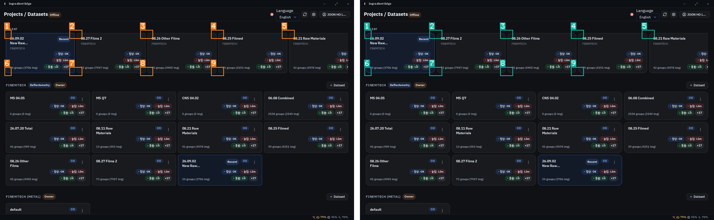
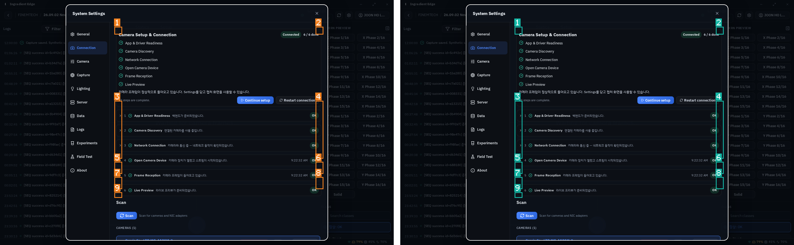
5. 2단계: 공용 컨트롤
- Connection의 Advanced 헤더 → Platform 댓글 패널과 같은
CollapsibleSectionHeader. 공용 헤더는 이제 열림 상태를 알리고(aria-expanded,aria-controls) 화살표 아이콘을 쓴다. - Deflectometry 조정의 기본 range 입력 → 공용
Slider(빠져 있던 접근성 이름 추가). 스토리가 없어 컴포넌트 스토리를 새로 만들었다. - 남긴 것(코드에 이유 기록): 촬영 버튼, 창 제목줄 버튼, 데이터셋 카드의 클릭 영역 버튼, 최근 카드 버튼.
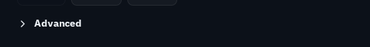
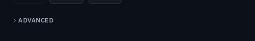
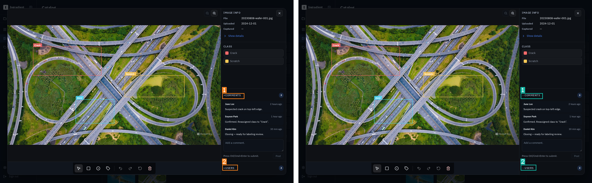
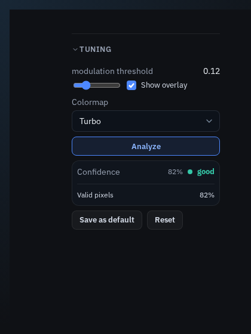
Components/Edge/Capture/DeflectometryTuningControls(현재 화면). 이전 모습을 비교할 스토리가 없었다.6. 3단계: 직접 쓴 px
- ROI 입력칸 4개는 존재하지 않는 토큰
--ig-popup-4xs의 대체값 72px로 폭을 정하고 있었다. 새 토큰 없이 공용NumberField를 2×2 칸에 채웠다(칸당 72→103px). - 4px 밖 값: 로그 시간 칸 최소 폭 45→44px, 로그 상세 창 위치 왼쪽 254→256px·위 58→56px.
- Edge 고유 크기(
geometry.ts)가 모두 4px 단위인지 테스트로 고정. 이제 Edge 소스에 직접 쓴 px는 이 파일뿐이다.
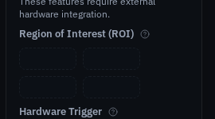
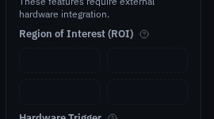
7. 4단계: 공용 열 레이아웃
좌우 패널을 Platform Catalog·Class와 같은 ResizableColumnsLayout으로 바꿨다. 기본 320px, 끌어서 220–480px, 폭 저장. 접힌 패널은 Edge에서 기능이 있는 띠(로그 상태 점, 클래스 선택)라 공용 레이아웃에 collapsedWidth를 추가했다(기본 0이라 Platform은 그대로).
| 측정 | 이전 | 이후 |
|---|---|---|
| 1440px: 왼쪽 / 가운데 / 오른쪽 | 280 / 880 / 280 | 320 / 784 / 320(+손잡이 2개) |
| 접힌 띠 | 56 / 56 | 56 / 56 |
| 768px: 가로 스크롤, 가운데 보이기 | 유지 | 유지(가운데 최소 640px) |
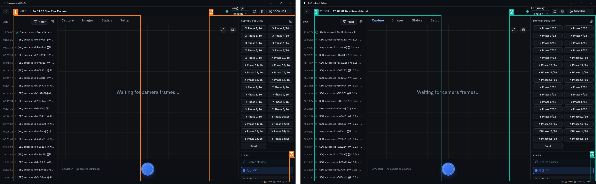
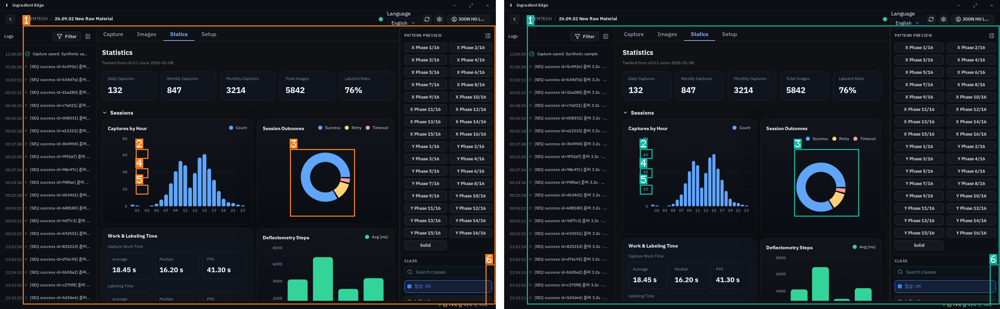
8. 5단계: 직접 꾸민 요소
- 레이아웃만 하던 styled 요소 21개 → 공용
Stack/Inline(화면 변화 없음, 다르게 나온 4개는 같은 빌드끼리도 흔들리는 노이즈). 쓰지 않던 1개 삭제. - 글자만 꾸미던 styled 요소 15개 → 공용
Text(크기·굵기·톤 그대로).Text는 글자 역할과 짝지은 줄 높이를 써서 글자가 1~2px 위아래로 움직인다(46개 스토리). - 남긴 것: Platform 톤과 색이 다른 상태 메시지(성공·경고·오류는
Text톤과 색이 다름), 사진 위 흰색 반투명 글자, 줄 높이를 따로 정한 설명문. 나머지 약 190개는 위치·배경·스크롤 등 화면 고유 스타일을 함께 가져 이번 범위가 아니다.
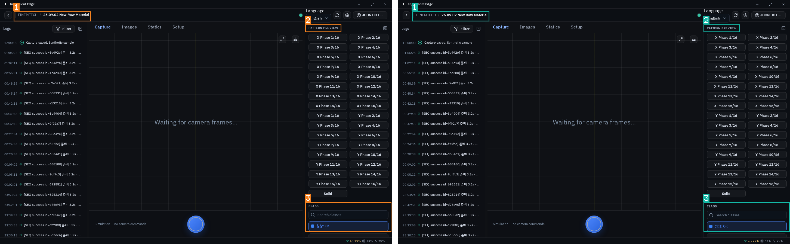
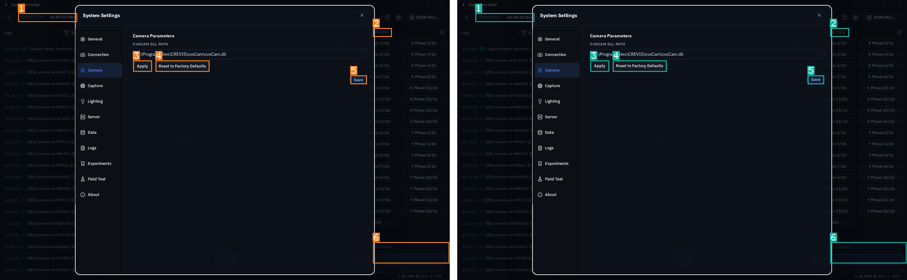
9. 남은 것
- Edge의 직접 꾸민 요소 약 190개(위치·배경·스크롤 포함). 화면별로 공용 컴포넌트가 생기면 이어서 줄인다.
- 공용
ResizableColumnsLayout:storageKey없이 쓰면 다시 그릴 때마다 폭이 기본값으로 돌아가는 코드가 있다(Platform Catalog). Edge는storageKey를 써서 영향이 없다. 확인 후 따로 고칠 것. - 0.0.6 시각 기준선, 0.0.5·0.0.1 보관, 부품 상태표 이동(1절).
10. 검증 방법과 재현
- 단계마다 CI 순서: lint, lint:style, tsc, 단위, edge-contract, 전체 Storybook, 패키지·exports·번들·smoke·packed consumer, style-literals, doc-coverage, Storybook 빌드. 3단계는 Edge 범위 검사 후 4단계 전체 검사에 포함.
- 도구:
assets/2026-11-01-edge-consistency/의hierarchy-check.mjs(모서리 위계),zero-diff-gate.mjs(PREFIX/IDS로 범위 지정, 기준 빌드를 두 번 찍어 흔들리는 스토리 제외),compare.mjs(번호 박스 전후 비교). - 단계별 빌드(6041~6046)는
/tmp에 있어 재부팅하면 사라진다. 비교 이미지와 측정 JSON은 위 폴더에 저장했다.